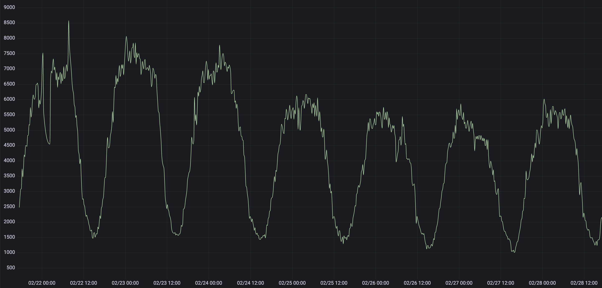

Boundary
Boundary is an extension of Skyline that enables very specific analysis of specified metrics with specified algorithms, with specified alerts.
Boundary was added to allow for threshold-like monitoring to the Skyline
model, it was specifically added to enable the detect_drop_off_cliff
algorithm which could not be bolted nicely into Analyzer (although it
was attempted, it was ugly). While Analyzer allows for the passive
analysis of 1000s of metrics, its algorithms are not perfect. Boundary
allows for the use of the Skyline data and model as a scapel, not just a
sword. Just like Analyzer, Boundary has its own algorithms and
importantly, Boundary is not CONSENSUS based. This means that you
can match key metrics on “thresholds/limits” and somewhat dynamically
too.
The Boundary concept is quite like Skyline backwards, enilyks. This is because where Analyzer is almost all to one configuration, Boundary is more one configuration to one or many. Where Analyzer is all metrics through all algorithms, Boundary is each metric through one algorithm. Analyzer uses a large range of the timeseries data, Boundary uses the most recent (the now) portion of the timeseries data.
Boundary currently has 3 defined algorithms:
detect_drop_off_cliff
less_than
greater_than
Boundary is run as a separate process just like Analyzer, horizon and mirage. It was not envisaged to analyze all your metrics, but rather your key metrics with additional analysis. If it was run across all of your metrics it would probably be:
VERY noisy
VERY CPU intensive
If deployed only key metrics it has a very low footprint (9 seconds on 150 metrics with 2 processes assigned) and a high return. If deployed as intended it should easily coexist with an existing Skyline Analyzer/Mirage setup, with adding minimal load. This also allows one to implement Boundary independently without changing, modifying or impacting on a running Analyzer.
Boundary alerting is similar to Analyzer alerting, but a bit more featureful and introduces the ability to rate limit alerts per alerter channel, as it is not beyond the realms of possibility that at some point all your key metrics may drop off a cliff, but maybe 15 pagerduty alerts every 30 minutes is sufficient, so alert rates are configurable.
Configuration and running Boundary
settings.py has an independent setting blocks and has detailed information
on each setting and the parameter in its docstring, the main difference from
Analyzer being in terms of number of variables that have to be declared in the
alert tuples, e.g:
BOUNDARY_METRICS = (
# ('metric', 'algorithm', EXPIRATION_TIME, MIN_AVERAGE, MIN_AVERAGE_SECONDS, TRIGGER_VALUE, ALERT_THRESHOLD, 'ALERT_VIAS'),
('metric1', 'detect_drop_off_cliff', 1800, 500, 3600, 0, 2, 'smtp'),
('metric2.either', 'less_than', 3600, 0, 0, 15, 2, 'smtp|hipchat'),
('nometric.other', 'greater_than', 3600, 0, 0, 100000, 1, 'smtp'),
)
For all the specific alert configurations see the Alerts page.
Once settings.py has all the Boundary configuration done, start
Boundary:
/opt/skyline/github/skyline/bin/boundary.d start
An example
Here is an example of what you can use Boundary for. If you look at the graph below, you can see that the minimum value is around 1000. Let us say that this metric is a fairly reliable and important global metric, like the number of page impression per minute in your shop.
We can configure Boundary to monitor this metric. Although you can use Boundary to monitor any metric, it works best if only monitoring your important and reliable global metrics with Boundary.
:: .. code-block:: python
(‘example_org.shop.total.page_impressions’, ‘detect_drop_off_cliff’, 1800, 800, 300, 0, 1, ‘smtp|slack|pagerduty’), (‘example_org.shop.total.page_impressions’, ‘less_than’, 1800, 0, 0, 1000, 7, ‘smtp|slack|pagerduty’),
The above settings.BOUNDARY_METRICS enables 2 algorithms to check this
metric against every minute, boundary_algorithms.detect_drop_off_cliff()
and boundary_algorithms.less_than(). Although the less_than check
should normally be sufficient on it’s own, the detect_drop_off_cliff check
will ensure that nothing is missed. For instance that metric could drop to
between 2 and 15 for 6 minutes and then go back up to 1600 and then drop again
for 5 minutes and go back up again and enter a “flapping” state. There are
instances where less_than may not fire, but detect_drop_off_cliff
would.
detect_drop_off_cliff algorithm
The detect_drop_off_cliff algorithm provides a method for analysing a
timeseries to determine is the timeseries “dropped off a cliff”. The
standard Skyline Analyzer algorithms do not detect the drop off cliff
pattern very well at all, testing with Crucible has proven. Further to
this, the CONSENSUS methodology used to determine whether a
timeseries deemed anomalous or not, means that even if one or two
algorithms did detect a drop off cliff type event in a timeseries, it
would not be flagged as anomalous if the CONSENSUS threshold was not
breached.
The detect_drop_off_cliff algorithm - does just what it says on the tin. Although this may seem like setting and matching a threshold, it is more effective than a threshold as it is dynamically set depending on the data range.
Some things to note about analyzing a timeseries with the algorithm are:
This algorithm is most suited (accurate) with timeseries where there is a large range in the timeseries most datapoints are > 100 (e.g high rate). Arbitrary
triggervalues in the algorithm do filter peaky low rate timeseries, but they can become more noisy with lower value data points, as significant cliff drops are from a lower height, however it still generally matches drops off cliffs on low range metrics.The trigger tuning based on the timeseries sample range is fairly arbitrary, but has been tested and does filter peaky noise in low range timeseries, which filters most/lots of noise.
The alogrithm is more suited to data sets which come from multiple sources, e.g. an aggregation of a count from all servers, rather than from individual sources, e.g. a single server’s metric. The many are less likely to experience false positive cliff drops, whereas the individual is more likely to experience true cliff drops.
ONLY WORKS WITH:
Positive, whole number timeseries data
Does not currently work with negative integers in the timeseries values (although it will not break, will just skip if a negative integer is encountered)
For more info see: detect_drop_off_cliff
What Boundary does
Boundary is very similar in work flow to Analyzer in terms of how it surfaces and analyzes metrics.
Boundary determines all unique metrics in Redis.
Boundary determines what metrics should be analyzed from the
BOUNDARY_METRICStuple insettings.py, matching the defined namespaces to all the unique_metrics list from Redis.These are divided between the
BOUNDARY_PROCESSESto be analyzed.Boundary’s spawned processes pull the all timeseries for the metrics they are assigned from Redis and iterate through each metric and analyses it’s timeseries against the algorithm declared for the metric in the matching
BOUNDARY_METRICStuple/s insettings.pyThe Boundary process will add any metric that it finds anomalous to a list of anomalous_metrics.
The parent Boundary process will then check every metric in the anomalous_metrics list to see if:
An alert has been triggered for the metric within the last
EXPIRATION_TIMEseconds by querying the metric’s Boundary alert key in RedisIf no alert key is set, send alert/s to configured alerters and sets the metric’s Boundary alert key in for
EXPIRATION_TIMEseconds in Redis.If no alert key is set and
settings.PANORAMA_ENABLEDis True, the anomalous metrics details will be inserted into the database.